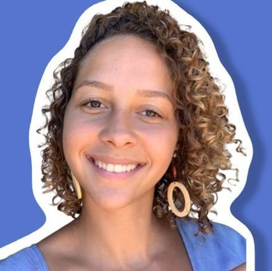

Dev Full Stack em Contrução

Oi sou a Giulia, estudante da Labenu no curso noturno de Desenvolvimento Full Stack.
Amo esportes, principalmente Canoa Havaiana e musculação, também amo música - cantar e tocar vilão são meu passatempos favoritos. Espero em breve conseguir transicionar de carreira e entrar no mundo da programação como Dev Jr
Habilidades
RACIOCÍNIO LÓGICO
Desenvolvi essa habildiade durante a faculdade, onde fiz aalguns estágios e, laborários e também fui monitora de estatística
COMUNICAÇÃO
Ao longo da minha trajetória profissional e pessoal fui descobrindo o valor dessa habildiade que é primordial para que projetos se desenvolvam
Adaptabilidade
De acordo com as minha vivências consegui aprender a lidar com as mais diversas situações e ambientes
Sou estudante da Labenu no curso noturno de Desenvolvimento Full Stack.
Amo esportes, principalmente Canoa Havaiana e musculação, também amo música - cantar e tocar vilão são meu passatempos favoritos.
Facilidade na relação pessoal, trabalho em equipe, sistemas, dados, e aprendizado rápido. Capacidade de organização, comunicação, liderança. Formação em Engenharia Ambiental e Sanitária, com pós graduação em Engenharia de Segurança do Trabalho. Experiência comercial (pré-vendas), atendimento ao cliente, e sucesso do cliente. Espero em breve conseguir transicionar de carreira e entrar no mundo da programação como Dev Jr.
Site desenvolvido por Giulia Verruck